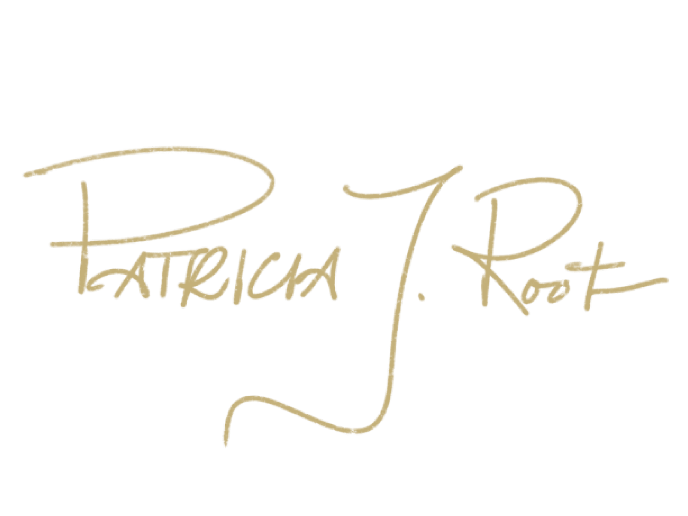
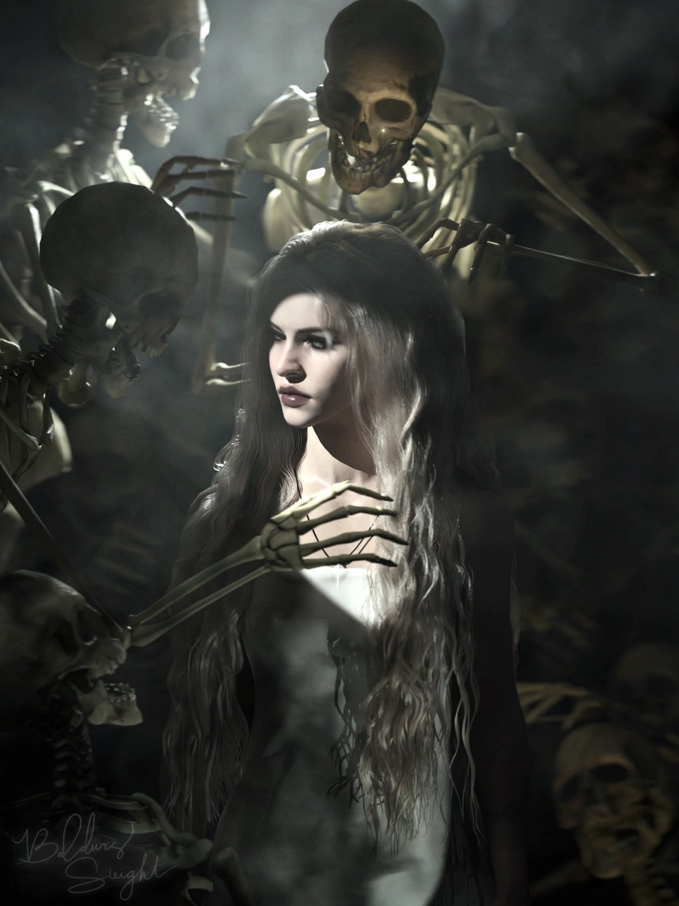
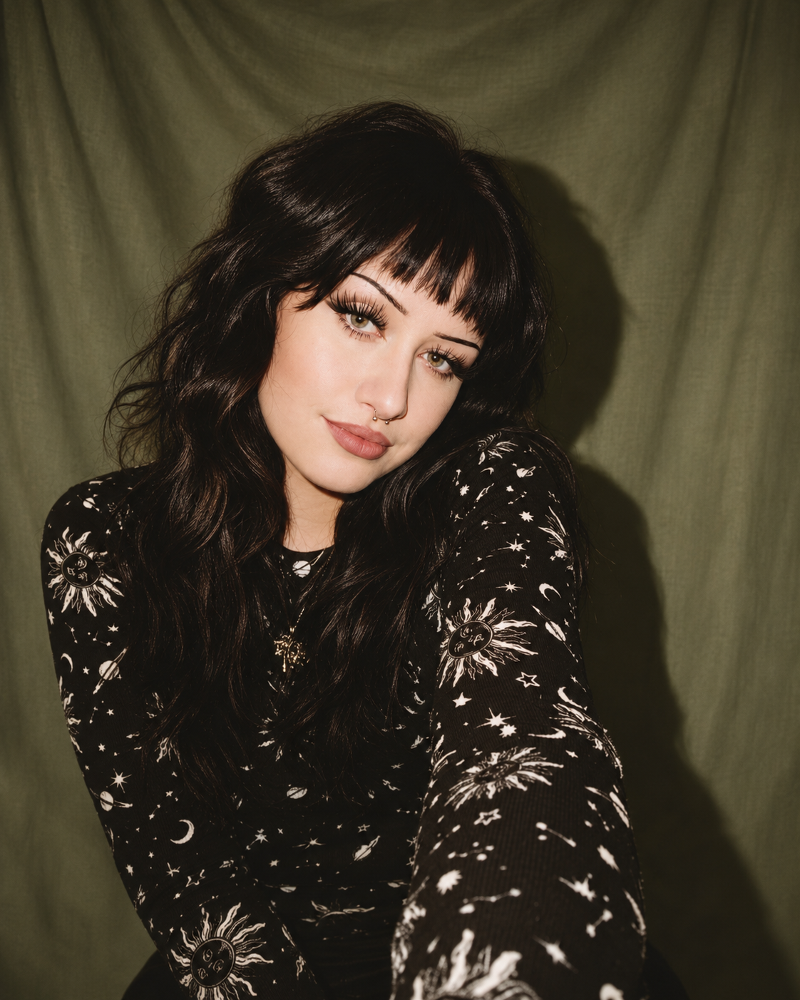
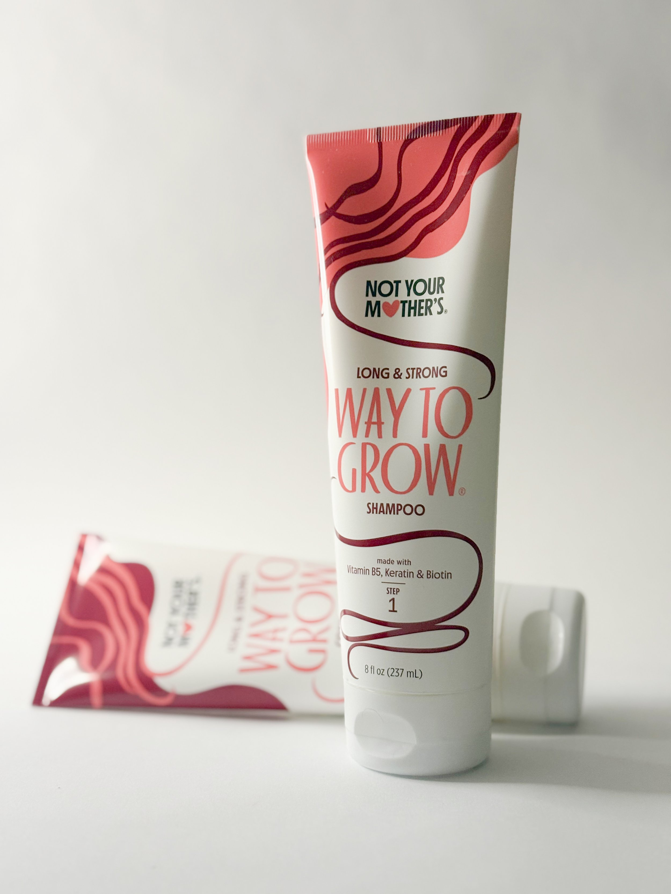
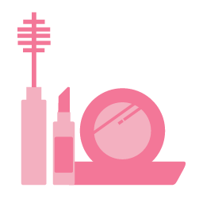

40K+ organic likes
Astarion × espresso
Transitions, engagement and trends.

Video editor & content creator focused on high-engagement short-form content, cinematic storytelling, and audience-driven growth.

VISUAL STORYTELLING · DIGITAL ART
THE ARTIST BEHIND THE WORKHi, I'm Patricia! I'm a digital multimedia designer and content creator with a passion for visual storytelling. From video editing and motion graphics to 3D design and interactive projects, I love bringing creative ideas to life.
Experienced with CapCut, After Effects, Photoshop, Lightroom, Illustrator, and Blender, I focus on detailed compositions, cinematic editing, visual rhythm, and work that connects with an audience.
Video, animation, photography & visual design
Baldur’s Gate 3 fan edits — CapCut, visual rhythm, editing trends and audience engagement. Click a video to play it through TikTok.
Transitions, engagement and trends.
Trend-based editing and audience engagement.
Clip selection, pacing and trends.
Free camera, model swapping and scene injection.
Creative transitions and trend interpretation.
Model swapping, emotional storytelling and audience connection.






Explore more creative editing and storytelling work.
Visit @baldurs.sleight ↗